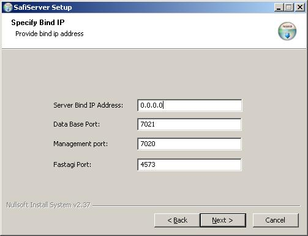

Installing SafiServer on Windows
Installing SafiServer on Windows 32-bit
Installation of the SafiServer on Windows is straight forward. The only part requiring some explanation is the IP address and port
selection page:

- Server Bind IP Address: This is the IP address that the
SafiServer will bind to and must be reachable from all Asterisk servers,
and from the SafiWorkshop as well "0.0.0.0" is a "wildcard" IP address and, if specified, will cause the server to
bind to all IPs available on
the machine.
- Database Port: The SafiServer utilizes a
lightweight internal database to store Saflets (call flow applications),
Asterisk server settings, SafiWorkshop users, and other system settings. The
SafiWorkshop needs access to that database in order to retrieve/deploy
Saflets, add/modify users, register Asterisk servers, etc. and it does so
using that port (default: 7021).This port does not need to be open to the Asterisk servers.
- Management Port: This port serves dual
purposes.For one, the SafiWorkshop
uses this port to receive real time logging and system information from
the production SafiServer, useful for remote debugging and management.The management port is also used by something
called the "Custom Initiator" to trigger Saflets remotely.A description and tutorial for the
Custom Initiator is beyond the scope of this post but to summarize, the
Custom Initiator allows one to invoke a Saflet remotely.For example, if you wanted to implement a "call back" function from a web page you could do that using the Custom
Initiator.
- FastAGI Port: This is the port upon which the SafiServer will accept FastAGI
requests from the Asterisk server(s).The Asterisk default for this port is 4573.If set to anything other than the
default then the port must then be specified explicitly from the
originating FastAGI call in the extensions.conf (eg. exten =
1111,1,Agi(agi://192.168.0.10:4574/safletEngine.agi?saflet=myproject/mysaflet).